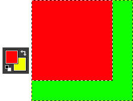
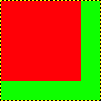
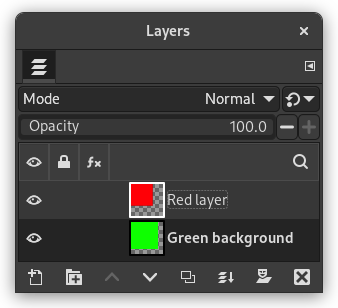
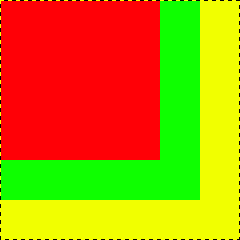

The “canvas” is the visible area of the image. By default the size of the canvas coincides with the size of the layers. The command opens the “Set Image Canvas Size” dialog that lets you enlarge or reduce the canvas size. You can, if you want, modify the size of the layers. When you enlarge the canvas, you create free space around the contents of the image. When you reduce it, the visible area is cropped, however the layers still extend beyond the canvas border.
When you reduce the canvas size, the new canvas appears surrounded with a thin negative border in the preview. The mouse pointer is a moving cross: click and drag to move the image against this frame.
Canvas Size
- Width, Height
-
You can set the Width and the Height of the canvas. The default units are pixels but you can choose different units, e.g. percent, if you want to set the new dimensions relative to the current dimensions. If the
 Chain to the right of the Width and
Height is not broken, both Width and Height keep the same
relative size to each other. That is, if you change one of the
values, the other one also changes a corresponding amount.
If you break the Chain by clicking on it, you can set
Width and Height separately.
Chain to the right of the Width and
Height is not broken, both Width and Height keep the same
relative size to each other. That is, if you change one of the
values, the other one also changes a corresponding amount.
If you break the Chain by clicking on it, you can set
Width and Height separately.
Whatever units you use, information about the size in pixels and the current resolution are always displayed below the Width and Height fields. You cannot change the resolution in the dialog; if you want to do that, use the Print Size dialog.
Offset
The Offset values are used to place the image (the image, not the active layer) on the canvas. You can see the size and the content of the canvas in the preview of the dialog window. When the canvas is smaller than the image, the preview window shows it in a frame with a thin negative border.
- X, Y
-
The X and Y specify the coordinates of the upper left corner of the image relative to the upper left corner of the canvas. They are negative when the canvas is smaller than the image. You can place the image in different ways (of course, the coordinates can't exceed the canvas borders):
-
by click-and-dragging the image,
-
by entering values in the X and Y text boxes,
-
by clicking on the small arrow-heads. This increments the value by one pixel (unit).
-
And when the focus is on a text box, you can use the keyboard arrow keys, Up and Down to change by one pixel (unit), or PageUp and PageDown to change the value by 10 pixels (units).
-
- Layers
-
-
Resize layers: this drop-down list offers you several possibilities:
-
None: default option. No layer is resized, only the canvas is.
-
All Layers: all layers are resized to canvas size.
-
Image-sized layers: only layers with the same size as the image are sized to canvas size.
-
All visible layers: only visible layers, marked with a icon, in the Layers dialog, are sized to canvas size.
-
-
Fill with: you can fill resized layers with Foreground color, Background color, Middle Gray (CIELAB), White, Transparency (default), Pattern.
-
Resize text layers: Resizing text layers will make them uneditable.
-
- Center
-
The Center button allows you to center the image on the canvas. When you click on the Center button, the offset values are automatically calculated and displayed in the text boxes.
![[Note]](images/note.png)
|
Note |
|---|---|
|
When you click on the Resize button, the canvas is resized, but the pixel information and the drawing scale of the image are unchanged. If the layers of the image did not extend beyond the borders of the canvas before you changed its size, there are no layers on the part of the canvas that was added by resizing it. Therefore, this part of the canvas is transparent and displayed with a checkered pattern, and it is not immediately available for painting. You can either flatten the image, in which case you will get an image with a single layer that fits the canvas exactly, or you can use the Layers to Image Size command to resize only the active layer, without changing any other layers. You can also create a new layer and fill it with the background you want. By doing this, you create a digital “passe-partout” (a kind of glass mount with a removable back for slipping in a photograph). |
Figure 16.60. Original image

The background color in the Foreground/Background Colors area of the Toolbox is set to yellow; Original image with 100×100 pixels size.

We started with a green background layer 100×100 pixels. Then we added a new red layer 80×80 pixels. The active layer limits are marked with a black and yellow dotted line. The red layer does not fill the canvas completely: the unoccupied part is transparent.
Figure 16.61. Canvas enlarged (layers unchanged)

The canvas has been enlarged to 120×120 pixels. The unoccupied part of the canvas is transparent.

The layers size remained unchanged.
Figure 16.62. Canvas enlarged (all layers changed)

The canvas has been enlarged to 120×120 pixels. The undrawn part is transparent in the red layer and yellow (background color in Toolbox) in the green background layer.

All layers have been enlarged to the canvas size.
You may want to add some stuff around your image: enlarge canvas size, add a new layer that will have the same size as the new canvas and then paint this new layer. That's the converse of cropping.
You can also use this command to crop an image:

Click on the
 chain next to Width and Height entries to unlink
dimensions. By modifying these dimensions and moving image against
canvas, by trial and error, you can crop the part of the image you
want. Click on the Center button and then on the Resize button.
chain next to Width and Height entries to unlink
dimensions. By modifying these dimensions and moving image against
canvas, by trial and error, you can crop the part of the image you
want. Click on the Center button and then on the Resize button.

|
|
Note |
|---|---|
|
The Crop tool is easier to use. |